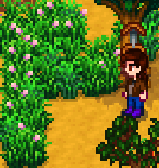

Gras
| Gras | |
|  | |
| Information | |
| Saat | |
| Wachstumszeit | Unterschiedlich |
| Jahreszeit | |
Gras ist ein natürlich vorkommender Rohstoff, der im Frühling, Sommer und Herbst wächst. Zu Beginn eines neuen Spiels gibt es viele mit Gras bewachsene Stellen auf dem Hof. Jeden Tag wächst neues Gras direkt neben bestehendem. Mit einer Sense kann man das Gras abtragen. Hat der Spieler ein Silo gebaut, so gibt es eine 50&ige Wahrscheinlichkeit, dass aus dem Gras Heu wird, welches automatisch im Silo lagert.
Gras kommt zwar natürlich vor, allerdings kann der Spieler mit einem Grasbündel den Wachstum von neuem Gras vorantreiben. Am gesetzten Gras wächst auch mit der Zeit neues Gras.
Ab und an wächst Gras über Nacht auf freien Flecken auf dem Hof. Auch dieses Gras wächst von alleine weiter.
Im Winter kann Gras nicht natürlich wachsen. Das Gras, dass sich am Ende vom Herbst noch auf dem Hof befand, wird am 1. Wintertag komplett entfernt. Da die Tiere den ganzen Winter über in ihren Ställen bleiben und nur Heu fressen können, macht es Sinn, am letzten Herbsttag alles Gras zu ernten, damit sich die Silos mit Heu füllen. Ansonsten lässt sich Heu aber nach wie vor bei Marnie für  50 G pro Stück kaufen.
50 G pro Stück kaufen.
Blaues Gras

Blaues Gras kommt natürlicherweise auf Meadowlands-Höfen vor. Ein Rezept für Blaugras-Starter kann in Geheimes Walnusszimmer von Mr. Qi für  40 erworben werden, wodurch blaues Gras auf anderen Farmtypen platziert werden kann.
40 erworben werden, wodurch blaues Gras auf anderen Farmtypen platziert werden kann.
Tiere, die blaues Gras fressen, gewinnen doppelt so viel Freundschaft wie durch den Verzehr von normalem Gras (16 statt 8).[1] Wenn blaues Gras erfolgreich mit einer Sense geschnitten wird, produziert es zwei anstatt einem Heustück.[2]
Tiere fressen die Hälfte der Blaugrasbüschel im Vergleich zu normalem Gras (Hühnerstalltiere 1 statt 2 Büschel, Stalltiere 2 statt 4 Büschel).[3]
Tips
- Gras breitet sich auf natürliche Weise nur auf bebaubaren Bodenfeldern aus. Es breitet sich nicht auf natürliche Weise auf grünen, „grasbewachsenen“ Feldern aus.
- Die meisten Wege, Zäune, geschlossenen Tore oder Möbelstücke (wie Truhen oder Feuerschalen) verhindern die Ausbreitung von Gras durch das Feld, auf dem es sich befindet.
- Dies lässt sich ausnutzen, indem man Grasflächen in Tiergehegen abtrennt und so verhindert, dass sie das gesamte Gras in der Umgebung fressen. Dies ermöglicht ein schnelleres Nachwachsen des Grases, das aus dem eingezäunten Quellfeld stammt.
- Das Platzieren eines Zaunes auf jede Art von Gras verhindert, dass Tiere es fressen.
- Tiere lieben Blaugras. Es ist hilfreich, einiges davon in der Nähe Ställe zu pflanzen.
- Beachte, dass blaues Gras nur auf einem der Hoftypen zu finden ist, auf dem Meadowlands Hof.
Vermehrung
Jeder ausgewachsene Grasfleck besteht aus 4 einzelnen Büscheln. Jeden Tag hat jedes einzelne Büschel eine Wahrscheinlichkeit von 65%, dass er weiter wächst. Hat ein Fleck weniger als 4 Büschel, so wachsen 1-3 einzelne Büschel um die leeren Felder drumherum (zufällig). Hat der Fleck 4 Büschel, so wird jedes umliegende Feld geprüft. Es besteht eine 25%ige Wahrscheinlichkeit für jedes freie umliegende Feld, dass dort 1-3 neue Büschel wachsen.